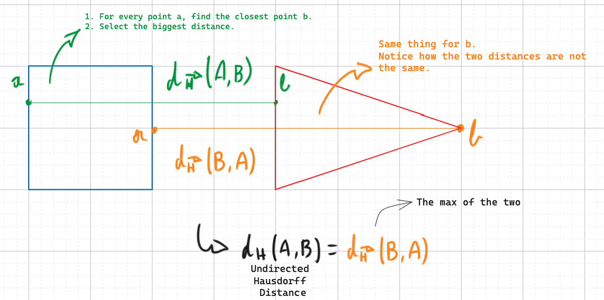
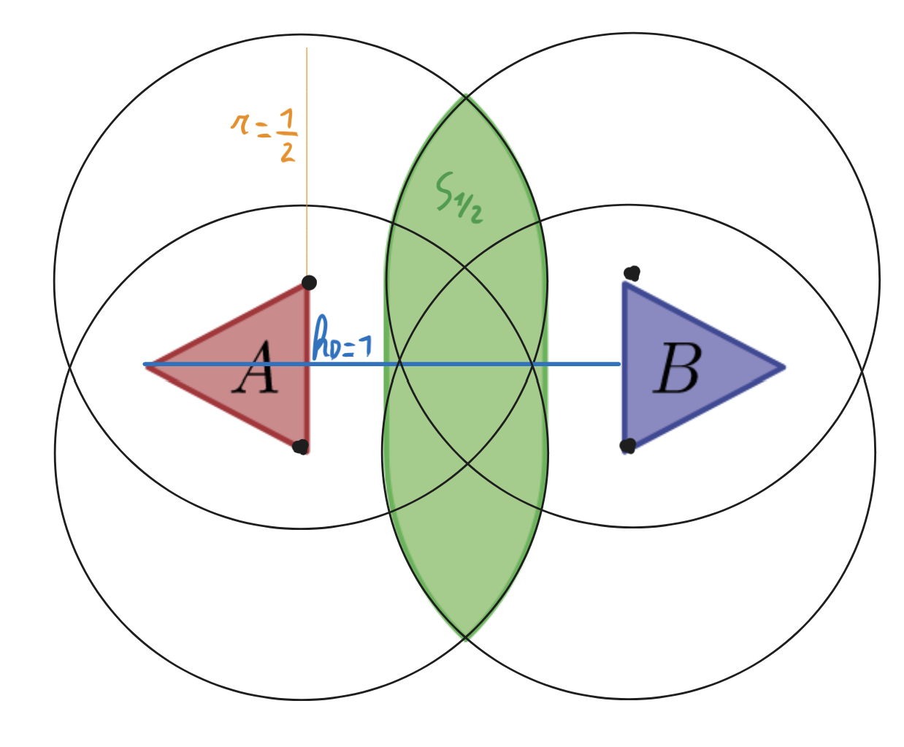

Computational Geometry Project
Authors: Bienfait Alexandre & Mutkowski Philippe
Project Overview
This website presents interactive demos for computational geometry concepts, focusing on Hausdorff distance, Minkowski sums and Hausdorff middle. The project is based on the paper:
Vermeulen, J.L., et al. (2021). Computing the Hausdorff middle and its applications in shape interpolation. Computational Geometry, 101817.
The Hausdorff distance is a metric used mainly in computer vision and computational geometry to assess the similarity between two objects (set of points or polygons for example). Imagine two shapes at a H distance of 1. Now imagine what could be the shape that sits exactly in the middle of them, what is the shape that has the same Hausdorff distance to A and to B ? Does an intermediate shape like that always exists ? Is is convex, correct ? How can we interpolate such shape ? This work will address this issue and go further by generalizing this concept.
The demos allow users to experiment with shape interpolation and Minkowski sums, visualizing the theoretical concepts interactively.
Key concepts overview
📏 Hausdorf distance
 We can see that the distance is not symetric, d(A,B) = 4 and d(B,A) = 5. The undirected distance is the maximum of the two.🧮 Minkowski sum
The minkowski sum of sets A and B is defined as A⊕︎B={a + b | a ∈ A, b ∈ B}. This looks like this :

💻 Computing S_1/2
Let's define a set where the two objects are at a Hausdorff distance of 1. There is only one maximum set S that lies at the same Hausdorff distance from A and from B.
S(A, B) := ( A ⊕ D1/2) ∩ (B ⊕ D1/2)
Figure 3 : showing the S1/2 set. We take the Minkowski sum of the